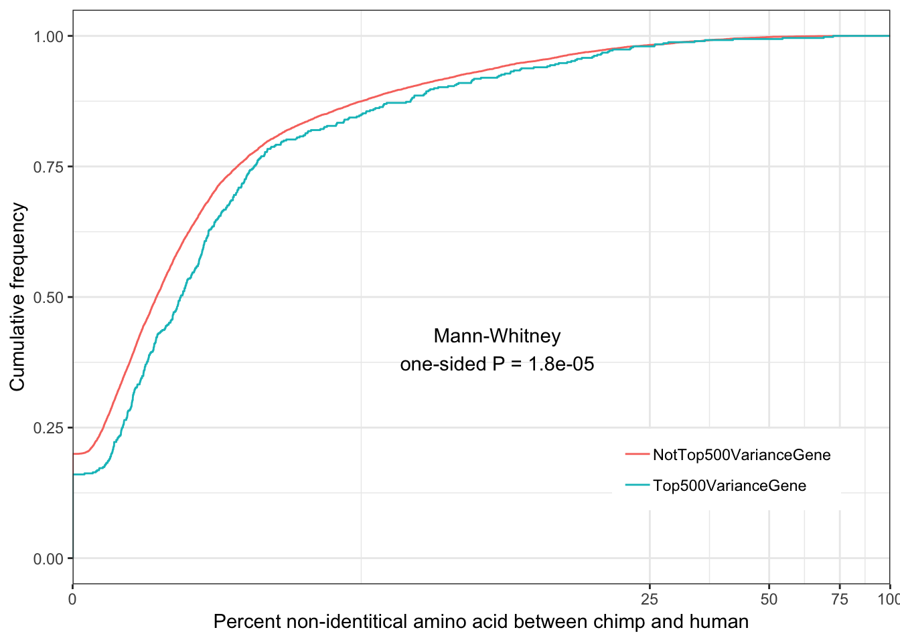
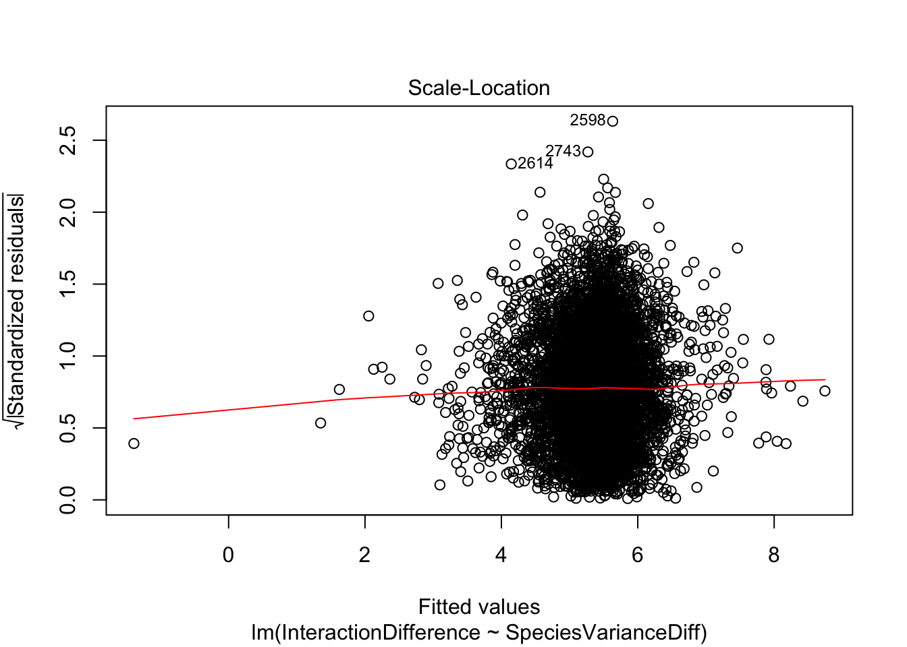
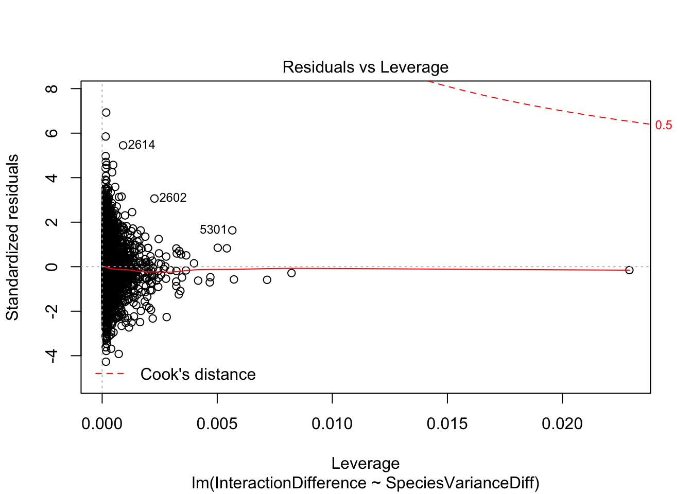

20190716_VarianceInsteadOfEgenes
Ben Fair
7/16/2019
Last updated: 2019-08-21
Checks: 7 0
Knit directory: Comparative_eQTL/analysis/
This reproducible R Markdown analysis was created with workflowr (version 1.4.0). The Checks tab describes the reproducibility checks that were applied when the results were created. The Past versions tab lists the development history.
Great! Since the R Markdown file has been committed to the Git repository, you know the exact version of the code that produced these results.
Great job! The global environment was empty. Objects defined in the global environment can affect the analysis in your R Markdown file in unknown ways. For reproduciblity it’s best to always run the code in an empty environment.
The command set.seed(20190319) was run prior to running the code in the R Markdown file. Setting a seed ensures that any results that rely on randomness, e.g. subsampling or permutations, are reproducible.
Great job! Recording the operating system, R version, and package versions is critical for reproducibility.
Nice! There were no cached chunks for this analysis, so you can be confident that you successfully produced the results during this run.
Great job! Using relative paths to the files within your workflowr project makes it easier to run your code on other machines.
Great! You are using Git for version control. Tracking code development and connecting the code version to the results is critical for reproducibility. The version displayed above was the version of the Git repository at the time these results were generated.
Note that you need to be careful to ensure that all relevant files for the analysis have been committed to Git prior to generating the results (you can use wflow_publish or wflow_git_commit). workflowr only checks the R Markdown file, but you know if there are other scripts or data files that it depends on. Below is the status of the Git repository when the results were generated:
Ignored files:
Ignored: .DS_Store
Ignored: .Rhistory
Ignored: .Rproj.user/
Ignored: analysis/.DS_Store
Ignored: analysis/20190521_eQTL_CrossSpeciesEnrichment_cache/
Ignored: analysis_temp/.DS_Store
Ignored: code/.DS_Store
Ignored: code/snakemake_workflow/.DS_Store
Ignored: data/.DS_Store
Ignored: data/PastAnalysesDataToKeep/.DS_Store
Ignored: docs/.DS_Store
Ignored: docs/assets/.DS_Store
Untracked files:
Untracked: analysis/20190821_eGeneTissueCount.Rmd
Untracked: docs/figure/20190821_eGeneTissueCount.Rmd/
Unstaged changes:
Modified: analysis/index.Rmd
Note that any generated files, e.g. HTML, png, CSS, etc., are not included in this status report because it is ok for generated content to have uncommitted changes.
These are the previous versions of the R Markdown and HTML files. If you’ve configured a remote Git repository (see ?wflow_git_remote), click on the hyperlinks in the table below to view them.
| File | Version | Author | Date | Message |
|---|---|---|---|---|
| Rmd | fdbae12 | Benjmain Fair | 2019-08-14 | updates |
| Rmd | e9747fe | Benjmain Fair | 2019-07-24 | update site |
| Rmd | f469d6a | Benjmain Fair | 2019-07-16 | new analyses |
For all the analyses I have using different levels of eGene character as a proxy for stabilizing selection (to get at what genes expression levels are important, and which are allowed to vary), I want to also do the same with coefficient of variation(CV) (as opposed to eGene character which requires that we can explain the variation by a cis-SNP). Even though CV does not require a heritable component to gene expression (which would therefore not be a target of stabilizing selection), it is more easy to measure CV than cis-eQTL mapping, and we know that 80% of gene expression heritability is trans anyway, so prioritizing stabilizing selection targets by presence of cis-eGene quality really only adds minimal evidence for heritability.
library(tidyverse)
library(knitr)
library("edgeR")
library(stats)
library(corrplot)
library(gplots)
library("clusterProfiler")
library("org.Hs.eg.db")
library(enrichplot)
# Helper function reference in body of later function
rep.col<-function(x,n){
matrix(rep(x,each=n), ncol=n, byrow=TRUE)
}
# Modified from the function in the PowerAnalysis Rmarkdown.
# Function to return RPKM table from chimp and human datasets (n=38 each)
# Use GenesToKeep argument to subset the same list that I compared for eQTLs
GetRPKMCountTable <-function(ChimpCountTableFile, HumanCountTableFile, SubsampleSize, GenesToKeep, ChimpSampleDrop=NULL, HumanSampleDrop=NULL)
#if SubsampleSize parameter == 0, use full table, otherwise, subsample from it
{
FullChimpData <- read.table(gzfile(ChimpCountTableFile), header=T, check.names=FALSE, skip=1)
FullHumanData <- read.table(gzfile(HumanCountTableFile), header=T, check.names=FALSE, skip=1)
if (!is.null(ChimpSampleDrop)){
FullChimpData <- FullChimpData %>% dplyr::select(-ChimpSampleDrop)
}
if (!is.null(HumanSampleDrop)){
FullHumanData <- FullHumanData %>% dplyr::select(-HumanSampleDrop)
}
if (SubsampleSize==0){
CountTableChimp <- FullChimpData
colnames(CountTableChimp) <- paste0("C.", colnames(CountTableChimp))
CountTableHuman <- FullHumanData
colnames(CountTableHuman) <- paste0("H.", colnames(CountTableHuman))
} else {
CountTableChimp <- FullChimpData %>% dplyr::select(c(1:6, sample(7:length(FullChimpData), SubsampleSize)))
colnames(CountTableChimp) <- paste0("C.", colnames(CountTableChimp))
CountTableHuman <- FullHumanData %>% dplyr::select(c(1:6, sample(7:length(FullHumanData), SubsampleSize)))
colnames(CountTableHuman) <- paste0("H.", colnames(CountTableHuman))
}
CombinedTable <- inner_join(CountTableChimp[,c(1,7:length(CountTableChimp))], CountTableHuman[,c(1,7:length(CountTableHuman))], by=c("C.Geneid"="H.Geneid")) %>%
column_to_rownames("C.Geneid") %>% as.matrix()
SpeciesFactor <- colnames(CombinedTable) %>% substr(1,1) %>% factor() %>% unclass() %>% as.character()
d0 <- DGEList(CombinedTable)
d0 <- calcNormFactors(d0)
d <- d0[GenesToKeep,]
mm <- model.matrix(~0 + SpeciesFactor)
y <- voom(d, mm, normalize.method="cyclicloess", plot=F)
GeneLengths <- inner_join(CountTableChimp[,c("C.Geneid", "C.Length")], CountTableHuman[,c("H.Geneid", "H.Length")], by=c("C.Geneid"="H.Geneid"))
GeneLengthMatrix <- cbind(
rep.col(log2(GeneLengths$C.Length/1000), length(CountTableChimp)-6),
rep.col(log2(GeneLengths$H.Length/1000), length(CountTableHuman)-6))
rownames(GeneLengthMatrix) <- GeneLengths$C.Geneid
y$E <- y$E - GeneLengthMatrix[rownames(y$E),]
return(y)
# return(d0)
}Get list of cis-eQTL tested genes that were tested in both chimps and humans and one-to-one orthologs and also in DE gene count tables (from reads mapped to ortho exons):
CountTableChimpFile <- '../output/PowerAnalysisFullCountTable.Chimp.subread.txt.gz'
CountTableHumanFile <- '../output/PowerAnalysisFullCountTable.Human.subread.txt.gz'
eQTLs <- read.table(gzfile("../data/PastAnalysesDataToKeep/20190521_eQTLs_250kB_10MAF.txt.gz"), header=T)
# List of chimp tested genes
ChimpTestedGenes <- rownames(read.table('../output/ExpressionMatrix.un-normalized.txt.gz', header=T, check.names=FALSE, row.names = 1))
ChimpToHumanGeneMap <- read.table("../data/Biomart_export.Hsap.Ptro.orthologs.txt.gz", header=T, sep='\t', stringsAsFactors = F)
# Of this ortholog list, how many genes are one2one
OneToOneMap <- ChimpToHumanGeneMap %>%
filter(Chimpanzee.homology.type=="ortholog_one2one")
# Read gtex heart egene list
# Only consider those that were tested in both species and are one2one orthologs
GtexHeartEgenes <- read.table("../data/Heart_Left_Ventricle.v7.egenes.txt.gz", header=T, sep='\t', stringsAsFactors = F) %>%
mutate(gene_id_stable = gsub(".\\d+$","",gene_id)) %>%
filter(gene_id_stable %in% OneToOneMap$Gene.stable.ID) %>%
mutate(chimp_id = plyr::mapvalues(gene_id_stable, OneToOneMap$Gene.stable.ID, OneToOneMap$Chimpanzee.gene.stable.ID, warn_missing = F)) %>%
filter(chimp_id %in% ChimpTestedGenes)
EgenesTested <- gsub("\\..+", "", GtexHeartEgenes$gene_id, perl=T)
length(EgenesTested)[1] 11586GenesInDESet <- read.table(gzfile(CountTableChimpFile), header=T, check.names=FALSE, skip=1)$Geneid
length(GenesInDESet)[1] 44125GeneList <- intersect(as.character(GenesInDESet),EgenesTested)
kable(head(GeneList))| x |
|---|
| ENSG00000186827 |
| ENSG00000078808 |
| ENSG00000176022 |
| ENSG00000184163 |
| ENSG00000160087 |
| ENSG00000131584 |
length(GeneList)[1] 11416Ok, now get CountTable of 38 chimps, 38 humans (based on remapped data that maps to orthologous exons) of RPKM, and filtered for the outlier samples that I also left out of the DE gene power analysis
HumanSamplesToDrop <- c(c("SRR1507229","SRR603918", "SRR1478149", "SRR598509", "SRR613186"), c("SRR1489693", "SRR598148", "59167", "SRR1478900", "SRR1474730", "61317"))
ChimpSamplesToDrop <- c("Little_R")
CountTable <- GetRPKMCountTable(CountTableChimpFile,
CountTableHumanFile,
0, GeneList, ChimpSampleDrop=ChimpSamplesToDrop, HumanSampleDrop = HumanSamplesToDrop)
qplot(apply(CountTable,1,mean), sqrt(apply(CountTable,1,var)), alpha=0.05) +
geom_smooth(method="loess", show_guide = FALSE, se=F) +
xlab("Mean expression (log(RPKM)") +
ylab("Standard deviation") +
theme_bw() +
theme(legend.position = "none")scatter.smooth(apply(CountTable,1,mean), sqrt(apply(CountTable,1,var)), color="red")CountTableNonLog <- 2**CountTable$E
qplot(apply(CountTableNonLog,1,mean), sqrt(apply(CountTableNonLog,1,var)/apply(CountTableNonLog,1,mean)), alpha=0.01)ToPlot <- data.frame(CV=sqrt(apply(CountTableNonLog,1,var)/apply(CountTableNonLog,1,mean)),
mean = apply(CountTableNonLog,1,mean),
SDlogexpression = sqrt(apply(CountTable,1,var)),
logmean = apply(CountTable,1,mean))
# standard deviation vs expression (after log transforming RPKM), with CV as colors
ggplot(ToPlot, aes(x=log(mean), y=SDlogexpression, color=log(CV))) +
geom_point()Coefficient of variation still doesn’t really capture the character I am going after (since all the high CV genes are highly expressed), which is how much does a gene vary relative to other genes at its expression level. For now (for simplicity) I may simply use the standard deviation (after log transformation as my metric to get at stabilizing selection)
Below I will try fitting a loess mean-variance trend and rank genes according the how elevated they are above that trend
Gene.summarystats <- data.frame(CV=sqrt(apply(CountTableNonLog,1,var)/apply(CountTableNonLog,1,mean)),
mean = apply(CountTableNonLog,1,mean),
SDlogexpression = sqrt(apply(CountTable,1,var)),
logmean = apply(CountTable,1,mean))
Gene.summarystats.lo <- loess(SDlogexpression ~ logmean, Gene.summarystats)
Gene.summarystats$SD.minus.loess <- Gene.summarystats$SDlogexpression - predict(Gene.summarystats.lo, Gene.summarystats$logmean)
ggplot(Gene.summarystats, aes(x=logmean, y=SDlogexpression, color=SD.minus.loess)) +
geom_point() +
geom_smooth(method="loess", show_guide = FALSE, se=F) +
xlab("Mean expression (log(RPKM)") +
ylab("Standard deviation") +
scale_colour_gradient2(name = "Residual from loess curve") +
theme_bw() +
theme(legend.position="bottom")Alright that worked well, now do it for chimp, and again for human, and compare…
Get.GeneSummaryStat.df <- function(Input.df){
My.Gene.summarystats <- data.frame(mean = apply(Input.df,1,mean),
SD = sqrt(apply(Input.df,1,var)))
My.Gene.summarystats.lo <- loess(SD ~ mean, My.Gene.summarystats)
My.Gene.summarystats$SD.minus.loess <- My.Gene.summarystats$SD - predict(My.Gene.summarystats.lo, My.Gene.summarystats$mean)
return(My.Gene.summarystats)
}
CountTable.chimp <- CountTable$E %>% as.data.frame() %>% dplyr::select(contains("C."))
Chimp.summarystats <- Get.GeneSummaryStat.df(CountTable.chimp)
CountTable.human <- CountTable$E %>% as.data.frame() %>% dplyr::select(contains("H."))
Human.summarystats <- Get.GeneSummaryStat.df(CountTable.human)
# How does this statistic (std dev minus loess prediction) correlate across species
R<-cor(Chimp.summarystats$SD.minus.loess, Human.summarystats$SD.minus.loess, method="pearson")
lb1 <- paste("~R^2==~", round(R**2,2))
qplot(Chimp.summarystats$SD.minus.loess, Human.summarystats$SD.minus.loess, alpha=0.05) +
xlab("Chimp") +
ylab("Human")+
annotate("text",x=Inf,y=-Inf, label=lb1, hjust=1, vjust=-1, parse=TRUE) +
theme_bw() +
theme(legend.position = "none")
That correlation is surprisingly good. I should check that it isn’t a bug due to sample labels getting switched. Lets make correlation matrix of the original table to ensure that the chimp samples separate from the human samples.
cor(CountTable$E, method = c("spearman")) %>%
heatmap.2(trace="none")Ok wow, I guess it really is the case that gene expression variance is very consistent. If there really isn’t a bug, and this statistic is measuring what it should, I expect it to correlate strongly to other measures of conservation like dN/dS or percent identity
ChimpToHumanGeneMap <- read.table("../data/Biomart_export.Hsap.Ptro.orthologs.txt.gz", header=T, sep='\t', stringsAsFactors = F) %>% distinct(Gene.stable.ID, .keep_all = T)
ToPlot <- Chimp.summarystats %>%
rownames_to_column() %>%
left_join(ChimpToHumanGeneMap, by=c("rowname" = "Gene.stable.ID")) %>%
mutate(rank = dense_rank(dplyr::desc(SD.minus.loess))) %>%
mutate(group = case_when(
rank>=500 ~ "NotTop500VarianceGene",
rank<=500 ~ "Top500VarianceGene")) %>%
mutate(dN.dS = dN.with.Chimpanzee/dS.with.Chimpanzee)
ggplot(ToPlot, aes(color=group, x=100-X.id..query.gene.identical.to.target.Chimpanzee.gene+0.001)) +
stat_ecdf(geom = "step") +
scale_x_continuous(trans='log1p', limits=c(0,100), expand=expand_scale()) +
ylab("Cumulative frequency") +
xlab("Percent non-identitical amino acid between chimp and human") +
annotate("text", x = 10, y = 0.4, label = paste("Mann-Whitney\none-sided P =", signif(wilcox.test(data=ToPlot, X.id..query.gene.identical.to.target.Chimpanzee.gene ~ group, alternative="greater")$p.value, 2) )) +
theme_bw() +
theme(legend.position = c(.80, .2), legend.title=element_blank())
#What is overall correlation (previous analysis, where I compared two groups based on a threshold categorization of the other variable, is not the most sensitive method)
cor.test(ToPlot$X.id..query.gene.identical.to.target.Chimpanzee.gene, ToPlot$SD.minus.loess, method='spearman')
Spearman's rank correlation rho
data: ToPlot$X.id..query.gene.identical.to.target.Chimpanzee.gene and ToPlot$SD.minus.loess
S = 2.667e+11, p-value = 6.336e-16
alternative hypothesis: true rho is not equal to 0
sample estimates:
rho
-0.07554831 ggplot(ToPlot, aes(y=SD.minus.loess, x=100-X.id..query.gene.identical.to.target.Chimpanzee.gene+0.001)) +
geom_point() +
scale_x_continuous(trans='log1p', limits=c(0,100), expand=expand_scale()) +
ylab("SD.minus.loess") +
xlab("Percent non-identitical amino acid between chimp and human") +
theme_bw() +
theme(legend.position = c(.80, .2), legend.title=element_blank())ggplot(ToPlot, aes(color=group,x=dN.dS)) +
stat_ecdf(geom = "step") +
ylab("Cumulative frequency") +
xlab("dN/dS") +
scale_x_continuous(trans='log10', limits=c(0.01,10)) +
annotate("text", x = 1, y = 0.4, label = paste("Mann-Whitney\none-sided P =", signif(wilcox.test(data=ToPlot, dN.dS ~ group, alternative="less")$p.value, 2) )) +
theme_bw() +
theme(legend.position = c(.80, .2), legend.title=element_blank())Ok now subtract the variance metric (Chimp - human) to get a ordered list of genes where higher numbers means more variance in chimp.
RankedGeneList<-Chimp.summarystats$SD.minus.loess - Human.summarystats$SD.minus.loess
names(RankedGeneList) <- rownames(Chimp.summarystats)
SortedGeneList <- sort(RankedGeneList, decreasing=T)GSEA analysis
#bp
gsego.cc.chimp.high.var <- gseGO(gene = SortedGeneList,
OrgDb = org.Hs.eg.db,
keyType = 'ENSEMBL',
maxGSSize = 500,
ont = "BP",
nPerm = 100000)
A<-as.data.frame(gsego.cc.chimp.high.var)
bp2 <- simplify(gsego.cc.chimp.high.var, cutoff=0.7, by="p.adjust", select_fun=min)
gseaplot2(gsego.cc.chimp.high.var, geneSetID = c("GO:0002263", "GO:0061061", "GO:0072538", "GO:0000076"), title="ChimpVariance - HumanVariance", pvalue_table = TRUE)dotplot(bp2, font.size=8, showCategory=10)#all
gsego.all.chimp.high.var <- gseGO(gene = SortedGeneList,
OrgDb = org.Hs.eg.db,
keyType = 'ENSEMBL',
maxGSSize = 500,
ont = "ALL",
nPerm = 100000)
A<-as.data.frame(gsego.all.chimp.high.var)
A %>% as.data.frame() %>% dplyr::select(ONTOLOGY, ID, Description, enrichmentScore) %>% arrange(desc(abs(enrichmentScore))) %>% head(20) ONTOLOGY ID
1 CC GO:0042101
2 BP GO:0045059
3 CC GO:0071682
4 CC GO:0042611
5 BP GO:0090036
6 BP GO:0000076
7 MF GO:0042287
8 BP GO:0033081
9 BP GO:0046641
10 BP GO:0045076
11 BP GO:0043368
12 MF GO:0022829
13 BP GO:0034356
14 BP GO:0032753
15 BP GO:0072538
16 MF GO:0042288
17 CC GO:0042613
18 BP GO:0032673
19 BP GO:0045061
20 BP GO:2000316
Description
1 T cell receptor complex
2 positive thymic T cell selection
3 endocytic vesicle lumen
4 MHC protein complex
5 regulation of protein kinase C signaling
6 DNA replication checkpoint
7 MHC protein binding
8 regulation of T cell differentiation in thymus
9 positive regulation of alpha-beta T cell proliferation
10 regulation of interleukin-2 biosynthetic process
11 positive T cell selection
12 wide pore channel activity
13 NAD biosynthesis via nicotinamide riboside salvage pathway
14 positive regulation of interleukin-4 production
15 T-helper 17 type immune response
16 MHC class I protein binding
17 MHC class II protein complex
18 regulation of interleukin-4 production
19 thymic T cell selection
20 regulation of T-helper 17 type immune response
enrichmentScore
1 0.8748100
2 0.8312196
3 0.8080349
4 0.8049838
5 0.8021597
6 -0.8013554
7 0.7915898
8 0.7888677
9 0.7872037
10 0.7864955
11 0.7844327
12 0.7826594
13 0.7786233
14 0.7740712
15 0.7729389
16 0.7673605
17 0.7664554
18 0.7643274
19 0.7596905
20 0.7589618A %>% as.data.frame() %>% dplyr::select(ONTOLOGY, ID, Description, enrichmentScore) %>% arrange(desc(abs(enrichmentScore))) %>% head(20) ONTOLOGY ID
1 CC GO:0042101
2 BP GO:0045059
3 CC GO:0071682
4 CC GO:0042611
5 BP GO:0090036
6 BP GO:0000076
7 MF GO:0042287
8 BP GO:0033081
9 BP GO:0046641
10 BP GO:0045076
11 BP GO:0043368
12 MF GO:0022829
13 BP GO:0034356
14 BP GO:0032753
15 BP GO:0072538
16 MF GO:0042288
17 CC GO:0042613
18 BP GO:0032673
19 BP GO:0045061
20 BP GO:2000316
Description
1 T cell receptor complex
2 positive thymic T cell selection
3 endocytic vesicle lumen
4 MHC protein complex
5 regulation of protein kinase C signaling
6 DNA replication checkpoint
7 MHC protein binding
8 regulation of T cell differentiation in thymus
9 positive regulation of alpha-beta T cell proliferation
10 regulation of interleukin-2 biosynthetic process
11 positive T cell selection
12 wide pore channel activity
13 NAD biosynthesis via nicotinamide riboside salvage pathway
14 positive regulation of interleukin-4 production
15 T-helper 17 type immune response
16 MHC class I protein binding
17 MHC class II protein complex
18 regulation of interleukin-4 production
19 thymic T cell selection
20 regulation of T-helper 17 type immune response
enrichmentScore
1 0.8748100
2 0.8312196
3 0.8080349
4 0.8049838
5 0.8021597
6 -0.8013554
7 0.7915898
8 0.7888677
9 0.7872037
10 0.7864955
11 0.7844327
12 0.7826594
13 0.7786233
14 0.7740712
15 0.7729389
16 0.7673605
17 0.7664554
18 0.7643274
19 0.7596905
20 0.7589618# bp2 <- simplify(gsego.all.chimp.high.var, cutoff=0.7, by="p.adjust", select_fun=min)
# bp2 %>% as.data.frame() %>% dplyr::select(ONTOLOGY, ID, Description, enrichmentScore) %>% arrange(desc(abs(enrichmentScore))) %>% head(20)
table(A$ONTOLOGY)
BP CC MF
336 32 16 A$ID [1] "GO:0032101" "GO:0030155" "GO:0002263" "GO:0001816" "GO:0045087"
[6] "GO:0002366" "GO:0061061" "GO:0009986" "GO:0051046" "GO:0002274"
[11] "GO:0019221" "GO:0050778" "GO:0006954" "GO:0031347" "GO:1903530"
[16] "GO:0046649" "GO:0001817" "GO:0002444" "GO:0002275" "GO:0043299"
[21] "GO:0036230" "GO:0042119" "GO:0050865" "GO:0002253" "GO:0009617"
[26] "GO:0002694" "GO:0002521" "GO:0002764" "GO:0098552" "GO:0042110"
[31] "GO:0002757" "GO:0051249" "GO:1903706" "GO:0022407" "GO:0098542"
[36] "GO:0002697" "GO:0050727" "GO:0002250" "GO:0007159" "GO:0030098"
[41] "GO:0002768" "GO:0050867" "GO:0050863" "GO:0002696" "GO:0002429"
[46] "GO:1903037" "GO:0051251" "GO:1902105" "GO:0060326" "GO:0070661"
[51] "GO:0022409" "GO:0034612" "GO:0009897" "GO:0030217" "GO:0002460"
[56] "GO:0032943" "GO:0046651" "GO:0042113" "GO:0002449" "GO:1903039"
[61] "GO:0050870" "GO:0070663" "GO:0002699" "GO:0032944" "GO:0050851"
[66] "GO:0050670" "GO:0034341" "GO:1903708" "GO:0002703" "GO:0030595"
[71] "GO:0051092" "GO:0071346" "GO:0045619" "GO:0050852" "GO:0002819"
[76] "GO:1902107" "GO:0045580" "GO:0046631" "GO:0006959" "GO:0032946"
[81] "GO:0050671" "GO:0001906" "GO:0046632" "GO:0060333" "GO:0045621"
[86] "GO:0001909" "GO:0034340" "GO:0045582" "GO:0042102" "GO:0060337"
[91] "GO:0071357" "GO:0033077" "GO:0003823" "GO:0045058" "GO:0032633"
[96] "GO:0032673" "GO:0043368" "GO:0042287" "GO:0042101" "GO:0004888"
[101] "GO:0002446" "GO:0002283" "GO:0043312" "GO:0098797" "GO:0007052"
[106] "GO:0045785" "GO:0001819" "GO:0018212" "GO:0050900" "GO:0018108"
[111] "GO:0031349" "GO:0052547" "GO:0052548" "GO:0050730" "GO:0098802"
[116] "GO:0042742" "GO:0070665" "GO:0002706" "GO:0002705" "GO:0048525"
[121] "GO:0046637" "GO:0001910" "GO:0002287" "GO:0002293" "GO:0002294"
[126] "GO:0072376" "GO:0042093" "GO:0006956" "GO:0001784" "GO:0032743"
[131] "GO:0042611" "GO:0045088" "GO:0071356" "GO:0005539" "GO:0050792"
[136] "GO:0002822" "GO:0030317" "GO:0097722" "GO:0046634" "GO:0072562"
[141] "GO:0043367" "GO:0050853" "GO:0045622" "GO:0042692" "GO:1902850"
[146] "GO:0045089" "GO:0101002" "GO:0017157" "GO:0042129" "GO:0048514"
[151] "GO:0005509" "GO:0001525" "GO:0002286" "GO:0007517" "GO:0002683"
[156] "GO:0031341" "GO:0046635" "GO:0002292" "GO:0010469" "GO:0019730"
[161] "GO:0042098" "GO:0002526" "GO:0045445" "GO:0071621" "GO:1903901"
[166] "GO:0032663" "GO:0033081" "GO:0050729" "GO:0097530" "GO:0019724"
[171] "GO:0032103" "GO:0006027" "GO:0032609" "GO:0007051" "GO:0031294"
[176] "GO:0072538" "GO:0030545" "GO:0031012" "GO:0006026" "GO:0002532"
[181] "GO:0002709" "GO:0002285" "GO:0002708" "GO:0043903" "GO:0000076"
[186] "GO:0000819" "GO:0031295" "GO:0048018" "GO:0032753" "GO:0071222"
[191] "GO:0046641" "GO:0050866" "GO:0032623" "GO:0050864" "GO:0007059"
[196] "GO:0010035" "GO:0060205" "GO:0043235" "GO:0000075" "GO:0001568"
[201] "GO:0097529" "GO:0050731" "GO:0002695" "GO:0001818" "GO:0031983"
[206] "GO:0098813" "GO:0000070" "GO:0016064" "GO:0140014" "GO:0002820"
[211] "GO:0043044" "GO:0099003" "GO:0043408" "GO:0005819" "GO:0072539"
[216] "GO:0043370" "GO:0005874" "GO:0001912" "GO:0000793" "GO:0000280"
[221] "GO:0001772" "GO:1903900" "GO:0014706" "GO:0009435" "GO:0045059"
[226] "GO:0042035" "GO:0030162" "GO:1901222" "GO:0090036" "GO:0045061"
[231] "GO:0031343" "GO:0071219" "GO:0016079" "GO:2000116" "GO:0060538"
[236] "GO:0035710" "GO:0009636" "GO:0032496" "GO:0045071" "GO:0030139"
[241] "GO:0002823" "GO:0070670" "GO:0002673" "GO:0060537" "GO:0045309"
[246] "GO:0042330" "GO:0055001" "GO:0070820" "GO:0019955" "GO:0002790"
[251] "GO:0055002" "GO:0001539" "GO:0060285" "GO:0071556" "GO:0098553"
[256] "GO:1903305" "GO:0017156" "GO:1902749" "GO:0071353" "GO:0032735"
[261] "GO:0051250" "GO:0002707" "GO:0030101" "GO:2000514" "GO:0045076"
[266] "GO:0008037" "GO:0002237" "GO:0006935" "GO:0032649" "GO:0042094"
[271] "GO:0042108" "GO:0002228" "GO:0042089" "GO:0042107" "GO:0051301"
[276] "GO:0002931" "GO:0032613" "GO:0055069" "GO:0060047" "GO:0032653"
[281] "GO:0070372" "GO:0048489" "GO:0097480" "GO:0051146" "GO:0019674"
[286] "GO:0002455" "GO:0071682" "GO:0043901" "GO:0034356" "GO:0046633"
[291] "GO:0070371" "GO:0030449" "GO:2000257" "GO:0002920" "GO:1990266"
[296] "GO:0045576" "GO:0030593" "GO:1904724" "GO:0071216" "GO:0006336"
[301] "GO:2000316" "GO:0009611" "GO:0002824" "GO:0032733" "GO:0038061"
[306] "GO:0097479" "GO:0046638" "GO:0010942" "GO:1904813" "GO:0051303"
[311] "GO:0051310" "GO:2001233" "GO:0072525" "GO:0043410" "GO:0002821"
[316] "GO:0050000" "GO:0002456" "GO:0042288" "GO:0034724" "GO:0032692"
[321] "GO:0007186" "GO:0042267" "GO:0007080" "GO:0042613" "GO:0051091"
[326] "GO:0045121" "GO:0003015" "GO:0050830" "GO:0090307" "GO:0044818"
[331] "GO:0042100" "GO:0032691" "GO:0033628" "GO:0046596" "GO:0062023"
[336] "GO:0002702" "GO:0031570" "GO:0008016" "GO:1901342" "GO:0030414"
[341] "GO:0001501" "GO:0000302" "GO:0000779" "GO:1903539" "GO:0046640"
[346] "GO:0051090" "GO:0045505" "GO:0098589" "GO:0000226" "GO:0019319"
[351] "GO:0005796" "GO:0032418" "GO:0006094" "GO:0032729" "GO:0002704"
[356] "GO:1903522" "GO:0009306" "GO:0034080" "GO:0061641" "GO:0002886"
[361] "GO:0034728" "GO:0002758" "GO:0002793" "GO:0002711" "GO:0006882"
[366] "GO:0007093" "GO:0098857" "GO:0007017" "GO:0010466" "GO:0001892"
[371] "GO:0022829" "GO:0045335" "GO:0004715" "GO:0046364" "GO:0050663"
[376] "GO:1900015" "GO:0017171" "GO:0045064" "GO:0030183" "GO:0019359"
[381] "GO:0019363" "GO:0035821" "GO:0097237" "GO:0043062"Keep in mind GSEA finds both enrichment at both top and bottom of the list. MHC complex is on here, with higher enrichment in chimp
CC.gsea <- gseGO(gene = SortedGeneList,
OrgDb = org.Hs.eg.db,
keyType = 'ENSEMBL',
maxGSSize = 500,
ont = "CC",
nPerm = 100000)
BP.gsea <- gseGO(gene = SortedGeneList,
OrgDb = org.Hs.eg.db,
keyType = 'ENSEMBL',
maxGSSize = 500,
ont = "BP",
nPerm = 1000000)
MF.gsea <- gseGO(gene = SortedGeneList,
OrgDb = org.Hs.eg.db,
keyType = 'ENSEMBL',
maxGSSize = 500,
ont = "MF",
nPerm = 100000)
CC.gsea.simplified <- as.data.frame(simplify(CC.gsea))
CC.gsea.simplified$OntologyCategory <- "Cellular.Component"
BP.gsea.simplified <- as.data.frame(simplify(BP.gsea))
BP.gsea.simplified$OntologyCategory <- "Biological.Process"
MF.gsea.simplified <- as.data.frame(simplify(MF.gsea))
MF.gsea.simplified$OntologyCategory <- "Molecular.Function"
Combined <- rbind(
CC.gsea.simplified,
BP.gsea.simplified,
MF.gsea.simplified)
Combined %>%
group_by(OntologyCategory) %>%
top_n(n = 5, wt = abs(enrichmentScore)) %>%
ungroup() %>%
ggplot(aes(x=enrichmentScore, y=Description, color=p.adjust, size=setSize)) +
geom_point() +
xlim(c(-1,1)) +
facet_grid(OntologyCategory~., scales = "free") +
scale_colour_gradient(low="red", high="black") +
facet_grid(OntologyCategory~., scales = "free") +
labs(color = "Adjusted P-value") +
theme_bw()Combined %>%
group_by(OntologyCategory) %>%
top_n(n = -7, wt = qvalues) %>%
top_n(n = 7, wt = setSize) %>%
ungroup() %>%
# group_by(OntologyCategory) %>%
# sample_n(8) %>%
ggplot(aes(x=enrichmentScore, y=Description, size=setSize)) +
geom_point() +
xlim(c(-1,1)) +
facet_grid(OntologyCategory~., scales = "free") +
# scale_colour_gradient(low="red", high="black") +
# labs(color = "Adjusted P-value") +
theme_bw()In addition to GSEA analysis, it might be worthwile to also try to correlate difference in variance metric to chromatin-interaction score:
SampleA<- read.csv(gzfile("../data/IttaiHomerInteractionScoresInCisWindows/adj_bins_25_A-21792_10kb_norm.gz"), sep='\t')
SampleB<- read.csv(gzfile("../data/IttaiHomerInteractionScoresInCisWindows/adj_bins_25_B-28126_10kb_norm.gz"), sep='\t')
SampleC<- read.csv(gzfile("../data/IttaiHomerInteractionScoresInCisWindows/adj_bins_25_C-3649_10kb_norm.gz"), sep='\t')
SampleD<- read.csv(gzfile("../data/IttaiHomerInteractionScoresInCisWindows/adj_bins_25_D-40300_10kb_norm.gz"), sep='\t')
SampleE<- read.csv(gzfile("../data/IttaiHomerInteractionScoresInCisWindows/adj_bins_25_E-28815_10kb_norm.gz"), sep='\t')
SampleF<- read.csv(gzfile("../data/IttaiHomerInteractionScoresInCisWindows/adj_bins_25_F-28834_10kb_norm.gz"), sep='\t')
SampleG<- read.csv(gzfile("../data/IttaiHomerInteractionScoresInCisWindows/adj_bins_25_G-3624_10kb_norm.gz"), sep='\t')
SampleH<- read.csv(gzfile("../data/IttaiHomerInteractionScoresInCisWindows/adj_bins_25_H-3651_10kb_norm.gz"), sep='\t')
ChimpToHumanGeneMap <- read.table("../data/Biomart_export.Hsap.Ptro.orthologs.txt.gz", header=T, sep='\t', stringsAsFactors = F)
kable(head(ChimpToHumanGeneMap))| Gene.stable.ID | Transcript.stable.ID | Chimpanzee.gene.stable.ID | Chimpanzee.gene.name | Chimpanzee.protein.or.transcript.stable.ID | Chimpanzee.homology.type | X.id..target.Chimpanzee.gene.identical.to.query.gene | X.id..query.gene.identical.to.target.Chimpanzee.gene | dN.with.Chimpanzee | dS.with.Chimpanzee | Chimpanzee.orthology.confidence..0.low..1.high. |
|---|---|---|---|---|---|---|---|---|---|---|
| ENSG00000198888 | ENST00000361390 | ENSPTRG00000042641 | MT-ND1 | ENSPTRP00000061407 | ortholog_one2one | 94.6541 | 94.6541 | 0.0267 | 0.5455 | 1 |
| ENSG00000198763 | ENST00000361453 | ENSPTRG00000042626 | MT-ND2 | ENSPTRP00000061406 | ortholog_one2one | 96.2536 | 96.2536 | 0.0185 | 0.7225 | 1 |
| ENSG00000210127 | ENST00000387392 | ENSPTRG00000042642 | MT-TA | ENSPTRT00000076396 | ortholog_one2one | 100.0000 | 100.0000 | NA | NA | NA |
| ENSG00000198804 | ENST00000361624 | ENSPTRG00000042657 | MT-CO1 | ENSPTRP00000061408 | ortholog_one2one | 98.8304 | 98.8304 | 0.0065 | 0.5486 | 1 |
| ENSG00000198712 | ENST00000361739 | ENSPTRG00000042660 | MT-CO2 | ENSPTRP00000061402 | ortholog_one2one | 97.7974 | 97.7974 | 0.0106 | 0.5943 | 1 |
| ENSG00000228253 | ENST00000361851 | ENSPTRG00000042653 | MT-ATP8 | ENSPTRP00000061400 | ortholog_one2one | 94.1176 | 94.1176 | 0.0325 | 0.3331 | 1 |
# Of this ortholog list, how many genes are one2one
table(ChimpToHumanGeneMap$Chimpanzee.homology.type)
ortholog_many2many ortholog_one2many ortholog_one2one
2278 19917 140351 OneToOneMap <- ChimpToHumanGeneMap %>%
filter(Chimpanzee.homology.type=="ortholog_one2one")
ChimpToHuman.ID <- function(Chimp.ID){
#function to convert chimp ensembl to human ensembl gene ids
return(
plyr::mapvalues(Chimp.ID, OneToOneMap$Chimpanzee.gene.stable.ID, OneToOneMap$Gene.stable.ID, warn_missing = F)
)}
HumanInteractions <- data.frame(H.Score = base::rowSums(cbind(SampleA, SampleB, SampleE, SampleF))) %>%
rownames_to_column() %>%
mutate(HumanID = gsub("(.+?)\\..+?", "\\1", rowname, perl=T))
ChimpInteractions <- data.frame(C.Score = rowSums(cbind(SampleC, SampleD, SampleG, SampleH))) %>%
rownames_to_column() %>%
mutate(HumanID = ChimpToHuman.ID(rowname))
ToPlot <- data.frame(SpeciesVarianceDiff = RankedGeneList) %>%
rownames_to_column() %>%
left_join(HumanInteractions, by=c("rowname"="HumanID")) %>%
left_join(ChimpInteractions, by=c("rowname"="HumanID")) %>%
mutate(InteractionDifference=H.Score - C.Score) %>%
filter(!is.na(H.Score)) %>%
filter(!is.na(C.Score))
ggplot(ToPlot, aes(x=SpeciesVarianceDiff, y=InteractionDifference)) +
geom_point() +
theme_bw() +
xlab("Variation in expression\nTighter in human <-- --> Tighter in chimp") +
ylab("Differential contacts in cis window\nMore in human <-- --> More in chimp") +
geom_smooth(method='lm',formula=y~x)cor.test(x=ToPlot$SpeciesVarianceDiff, y=ToPlot$InteractionDifference, method="spearman")
Spearman's rank correlation rho
data: ToPlot$SpeciesVarianceDiff and ToPlot$InteractionDifference
S = 5.4814e+10, p-value = 0.811
alternative hypothesis: true rho is not equal to 0
sample estimates:
rho
-0.002880632 contacts.v.eGene.lm = lm(InteractionDifference ~ SpeciesVarianceDiff, data=ToPlot)
summary(contacts.v.eGene.lm)
Call:
lm(formula = InteractionDifference ~ SpeciesVarianceDiff, data = ToPlot)
Residuals:
Min 1Q Median 3Q Max
-207.59 -29.71 -2.91 28.14 336.83
Coefficients:
Estimate Std. Error t value Pr(>|t|)
(Intercept) 5.3982 0.5857 9.217 <2e-16 ***
SpeciesVarianceDiff -2.7851 3.0147 -0.924 0.356
---
Signif. codes: 0 '***' 0.001 '**' 0.01 '*' 0.05 '.' 0.1 ' ' 1
Residual standard error: 48.63 on 6894 degrees of freedom
Multiple R-squared: 0.0001238, Adjusted R-squared: -2.125e-05
F-statistic: 0.8535 on 1 and 6894 DF, p-value: 0.3556plot(contacts.v.eGene.lm)
Not significant. Perhaps most intuitive explanation is to why this relationship was significant with eGenes (species difference in neighborhood chromatin contacts partly explains species difference in cis-eGene rank) but not for variance (species difference in neghborhood chromatin contacts does not significantly explain any difference in within- species variance) is that the chromatin contacts only mediate cis-variance, while 80% of expression variance is in trans.
sessionInfo()R version 3.5.1 (2018-07-02)
Platform: x86_64-apple-darwin15.6.0 (64-bit)
Running under: macOS 10.14
Matrix products: default
BLAS: /Library/Frameworks/R.framework/Versions/3.5/Resources/lib/libRblas.0.dylib
LAPACK: /Library/Frameworks/R.framework/Versions/3.5/Resources/lib/libRlapack.dylib
locale:
[1] en_US.UTF-8/en_US.UTF-8/en_US.UTF-8/C/en_US.UTF-8/en_US.UTF-8
attached base packages:
[1] parallel stats4 stats graphics grDevices utils datasets
[8] methods base
other attached packages:
[1] enrichplot_1.2.0 org.Hs.eg.db_3.7.0 AnnotationDbi_1.44.0
[4] IRanges_2.16.0 S4Vectors_0.20.1 Biobase_2.42.0
[7] BiocGenerics_0.28.0 clusterProfiler_3.10.1 gplots_3.0.1.1
[10] corrplot_0.84 edgeR_3.24.3 limma_3.38.3
[13] knitr_1.23 forcats_0.4.0 stringr_1.4.0
[16] dplyr_0.8.1 purrr_0.3.2 readr_1.3.1
[19] tidyr_0.8.3 tibble_2.1.3 ggplot2_3.1.1
[22] tidyverse_1.2.1
loaded via a namespace (and not attached):
[1] fgsea_1.8.0 colorspace_1.4-1 ggridges_0.5.1
[4] rprojroot_1.3-2 qvalue_2.14.1 fs_1.3.1
[7] rstudioapi_0.10 farver_1.1.0 urltools_1.7.3
[10] ggrepel_0.8.1 bit64_0.9-7 lubridate_1.7.4
[13] xml2_1.2.0 splines_3.5.1 GOSemSim_2.8.0
[16] polyclip_1.10-0 jsonlite_1.6 workflowr_1.4.0
[19] broom_0.5.2 GO.db_3.7.0 ggforce_0.2.2
[22] compiler_3.5.1 httr_1.4.0 rvcheck_0.1.3
[25] backports_1.1.4 assertthat_0.2.1 Matrix_1.2-17
[28] lazyeval_0.2.2 cli_1.1.0 tweenr_1.0.1
[31] htmltools_0.3.6 prettyunits_1.0.2 tools_3.5.1
[34] igraph_1.2.4.1 gtable_0.3.0 glue_1.3.1
[37] reshape2_1.4.3 DO.db_2.9 fastmatch_1.1-0
[40] Rcpp_1.0.1 cellranger_1.1.0 gdata_2.18.0
[43] nlme_3.1-140 ggraph_1.0.2 xfun_0.7
[46] rvest_0.3.4 gtools_3.8.1 DOSE_3.8.2
[49] europepmc_0.3 MASS_7.3-51.4 scales_1.0.0
[52] hms_0.4.2 RColorBrewer_1.1-2 yaml_2.2.0
[55] memoise_1.1.0 gridExtra_2.3 UpSetR_1.4.0
[58] triebeard_0.3.0 stringi_1.4.3 RSQLite_2.1.1
[61] highr_0.8 caTools_1.17.1.2 BiocParallel_1.16.6
[64] rlang_0.3.4 pkgconfig_2.0.2 bitops_1.0-6
[67] evaluate_0.14 lattice_0.20-38 labeling_0.3
[70] cowplot_0.9.4 bit_1.1-14 tidyselect_0.2.5
[73] plyr_1.8.4 magrittr_1.5 R6_2.4.0
[76] generics_0.0.2 DBI_1.0.0 pillar_1.4.1
[79] haven_2.1.0 whisker_0.3-2 withr_2.1.2
[82] modelr_0.1.4 crayon_1.3.4 KernSmooth_2.23-15
[85] rmarkdown_1.13 viridis_0.5.1 progress_1.2.2
[88] locfit_1.5-9.1 grid_3.5.1 readxl_1.3.1
[91] data.table_1.12.2 blob_1.1.1 git2r_0.25.2
[94] digest_0.6.19 gridGraphics_0.4-1 munsell_0.5.0
[97] viridisLite_0.3.0 ggplotify_0.0.3